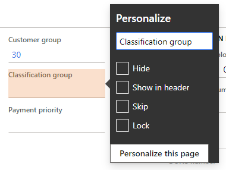

Die Benutzerumgebung personalisieren
Important
Diese Dokumentation ist teilweise von Microsoft verfasst und wurde nicht auf Vollständigkeit geprüft. Wenn informationen fehlen oder ein weiteres Kapitel hinzugefügt werden soll bitte eine Mail an das Dokumentations Team schreiben.
In diesem Thema wird erläutert, wie Sie die App personalisieren können. Es werden die folgenden Themen behandelt:
- Systemweite Optionen: Diese Personalisierungsoptionen werden auf einer Einrichtungsseite erstellt und stehen allen Benutzern zur Verfügung. Hierzu gehören das Farbenthema und Zeitzone.
- Eingeschränkter Personalisierungszugriff: Auf dieser Zugriffsebene werden Benutzeraktionen, die mit der typischen Seitennutzung verbunden sind, automatisch von der App gespeichert und beim nächsten Besuch der Seite wiederhergestellt. So speichert die App beispielsweise die Breite von Rasterspalten, wenn Sie sie anpassen, sowie den erweiterten/reduzierten Status von Inforegistern.
- Voller Personalisierungszugriff: Auf dieser Zugriffsebene haben Benutzer Zugriff auf alle Personalisierungsfunktionen in der App. Insbesondere haben sie Zugriff auf die Symbolleiste Personalisierung.
- Personalisierungen freigeben: Benutzer mit vollem Personalisierungszugriff können ihre Seitenpersonalisierungen exportieren und für andere Benutzer freigeben.
- Verwaltung der Personalisierungen: Berechtigte Benutzer können auf die Administrationsseite Personalisierung zugreifen, um alle Personalisierungen auf Organisationsebene zu verwalten.
Systemweite Optionen für den aktuellen Benutzer
Die Seite Benutzeroptionen enthält mehrere systemweite Einstellungen für den aktuellen Benutzer. Diese Optionen stehen allen Benutzern zur Verfügung, auch Benutzern, die keinen Zugriff auf die Personalisierung erhalten haben. Um die Seite Benutzeroptionen zu öffnen, wählen Sie die Schaltfläche Einstellungen auf der Navigationsleiste und dann Benutzeroptionen. Die Seite Benutzeroptionen besitzt vier Registerkarten, die verschiedene Benutzereinstellungen enthalten:
- Visuell: - Wird verwendet, um ein Farbenthema und die standardmäßige Größe der Elemente auf den Seiten auszuwählen.
- Einstellungen – Wählen Sie Standardwerte, die bei jedem Planungslauf verwendet werden, die Sie im System öffnen. Diese Werte umfassen das Standardunternehmen, die erste Seite und die Standardansicht/den Bearbeitungsmodus. (Anzeigen/Bearbeitungsmodus der bestimmt, ob eine Seite zum Anzeigen gesperrt ist oder diese zum Bearbeiten jedes Mal geöffnet wird, wenn Sie sie öffnen.) Diese Registerkarte enthält Optionen für die Sprache, die Zeitzone und das Datum, die Uhrzeit und Zahlenformate. Und schließlich enthält die Registerkarte unterschiedliche Einstellungen von Version zu Version.
- Konto: Hier können Sie Ihre Benutzer-ID und andere kontobezogene Optionen einsehen und anpassen.
- Workflow – Wählen Sie workflowbezogene Optionen aus.
Neben der Bearbeitung der Benutzereinstellungen können Sie Ihre Nutzungsdaten und Personalisierungen auch über die Seite Benutzeroptionen anzeigen und löschen. Um Ihre Nutzungsdaten anzuzeigen, wählen Sie Nutzungsdaten im Aktionsbereich. Auf der Registerkarte Personalisierung können Sie persönliche Änderungen anzeigen und verwalten, die Sie im System an Seiten vorgenommen haben. Auf dieser Registerkarte können Sie auch Funktionslegenden zurücksetzen (d.h. die Popup-Fenster, die neue Systemfunktionen einführen). Sie werden dann erneut über zuvor aufgetretene Funktionen informiert.
Note
Wenn die Funktion Gespeicherte Ansichten aktiviert ist, können Sie die Personalisierungen anzeigen und verwalten, indem Sie Personalisierung im Aktivitätsbereich auf der Seite Benutzeroptionen auswählen.
Eingeschränkter Personalisierungszugriff (früher „implizite Personalisierungen“)
Auf der Ebene Eingeschränkter Personalisierungszugriff werden Benutzeraktionen, die mit der typischen Seitennutzung verbunden sind, automatisch von der App gespeichert und beim nächsten Besuch der Seite wiederhergestellt. Eine explizite Speicherung ist nicht erforderlich.
Hier ist eine Liste der Aktionen, die unter die typische Seitennutzung fallen und durch den eingeschränkten Personalisierungszugriff abgedeckt sind:
- Rasterspaltenbreiten - Sie können die Breite einer Spalte in einer Liste anpassen, indem Sie die Größenänderungsleiste links oder rechts des Spaltenkopfs auswählen und sie nach links oder rechts auf die gewünschte Breite schieben. Die App speichert die Breite, die Sie festlegen,m in einer Spalte. Beim nächsten Öffnen dieser Seite wird die Breite dieser Spalte an diese Größe angepasst.
- Rasterfußzeile und Rasterspaltensummen: (Nur verfügbar, wenn das neue Rastersteuerelement aktiviert ist.) Sie können entscheiden, ob eine Summe am unteren Rand einer beliebigen numerischen Spalte in einem Raster angezeigt werden und ob die Rasterfußzeile sichtbar sein soll. Die App speichert diese Einstellungen und wendet sie beim nächsten Öffnen dieser Seite an. Weitere Informationen finden Sie unter Rasterfunktionen.
- Inforegister – Einige Seiten haben erweiterbare Abschnitte, die als Inforegister bezeichnet werden. Die App speichert Informationen über die Inforegister, die Sie erweitert oder reduziert haben. Beim nächsten Mal, wenn Sie zu der Seite zurückkehren, werden die gleichen Inforegister erweitert oder reduziert, basierend auf Ihrer letzten Interaktion mit der Seite. In einigen Fällen verbessert das Reduzieren eines Inforegisters die Leistung, da die App diese Informationen für Inforegister erst abruft, wenn die Inforegister erweitert werden. Wie später in diesem Thema erläutert, können Sie die Reihenfolge der Inforegister einer Seite auch ändern.
- Infoboxen: Einige Seiten haben einen Bereich Zugehörige Informationen, der schreibgeschützte Informationen enthält, die dem aktuell zugeordneten Betreff der Seite zugeordnet sind. Jeder Abschnitt im Bereich Zugehörige Informationen wird als Infobox bezeichnet. Sie können den Bereich Zugehörige Informationen erweitern oder reduzieren, und Sie können auch einzelne Infoboxen erweitern oder reduzieren. Die App speichert diese Einstellungen. Wenn Sie die Seite das nächste Mal öffnen, werden der Bereich Zugehörige Informationen und die einzelnen Infoboxen, basierend auf Ihrer letzten Interaktion mit der Seite erweitert oder reduziert. In einigen Fällen verbessert das Reduzieren des Bereichs zugehörige Informationen oder einer Infobox die Leistung, da die App diese Informationen erst abruft, wenn die Infoboxen erweitert werden.
- Aktivitätsbereiche – Aktivitätsbereich Wird meistens oben an den meisten Seiten angezeigt. Der Aktivitätsbereich enthält Schaltflächen für viele der Aktivitäten, die auf der aktuellen Seite ausgeführt werden können. Diese Schaltflächen werden häufig auf Registerkarten zusammengefasst. Sie können den gesamten Aktivitätsbereich als geöffnet fixieren oder Sie können ihn standardmäßig reduzieren lassen. Beim nächsten Mal, wenn Sie zu der Seite zurückkehren, wird der Aktivitätsbereich entweder geöffnet oder reduziert, basierend auf Ihrer letzten Interaktion mit der Seite. Wenn Sie den Aktivitätsbereich als geöffnet fixiert haben, wird die letzte verwendete Registerkarte angezeigt.
- QuickFilters – QuickFilter erscheint oberhalb vieler Raster. Mit QuickFiltern können Sie Raster basierend auf einer einzelnen Spalte filtern, die Sie auswählen. Die App speichert die Spalte, die Sie gefiltert haben. Wenn Sie das nächste Mal die Seite öffnen, nutzt das Raster zum Filtern automatisch dieselbe Spalte. Sie können jedoch trotzdem eine andere Spalte auswählen, um das Raster zu filtern.
- Spaltenüberschriftfilter: Wenn Sie ein Raster filtern, indem Sie Spaltenüberschriftfilter verwenden, können Sie den Filteroperator wie gewünscht ändern, um die Daten zu suchen, die Sie wünschen. Beispielsweise können Sie den gewünschten Operator von beginnt mit in ist genau ändern. Immer wenn Sie einen Spaltenüberschriftfilter verwenden und den Filteroperator ändern, speichert die App die Änderung. Sie stellt dann den Filteroperator das nächste Mal wieder her, wenn Sie diese Spalte filtern.
- Navigationsbereich – Sie können den Navigationsbereich öffnen, indem Sie die Schaltfläche Den Navigationsbereich erweitern im oberen linken Bereich der Seite auswählen. (Die Schaltfläche Menü wird auch als Hamburger, Hamburgermenü oder Hamburgerschaltfläche bezeichnet.) Sie können den offenen Navigationsbereich anheften, oder Sie können ihn standardmäßig reduziert anzeigen. Nachdem Sie den Navigationsbereich als offen angeheftet haben, bleibt die App offen, bis Sie ihn wieder reduzieren.
Voller Personalisierungszugriff (früher „explizite Personalisierungen“)
Auf der Ebene des vollen Personalisierungszugriffs haben Benutzer Zugriff auf alle Personalisierungsfunktionen, welche die App bereitstellt. Da unterschiedliche Personen und Unternehmen unterschiedliche Anforderungen an die Interaktion mit der App haben, insbesondere in Bezug auf die verwendeten Felder, bietet die Personalisierung Tools, mit denen Benutzer und Organisationen anpassen können, wie Informationen in der App angeordnet werden oder damit interagiert werden kann. Diese Funktionen sind der Schlüssel zur Bereitstellung vereinfachter, optimierter Erlebnisse in der App, die auf Sie und Ihr Unternehmen zugeschnitten sind.
Wenn die Funktion Gespeicherte Ansichten aktiviert ist, muss explizit gespeichert werden, um diese Änderungen der Benutzererfahrung für eine bestimmte Ansicht beizubehalten. Wenn die Funktion Gespeicherte Ansichten deaktiviert ist, werden diese Änderungen automatisch gespeichert.
In den folgenden Abschnitten wird der Umfang der Personalisierungsfunktionen beschrieben, die Benutzern auf Ebene des vollen Personalisierungszugriffs zur Verfügung stehen. Beispiele für dieser Funktionen:
- Verknüpfungsmenüoptionen
- Die Symbolleiste Personalisierung
- Hinzufügen von Kacheln, Listen und Links zu Arbeitsbereichen
- Hinzufügen einer Zusammenfassung von einem Arbeitsbereich zu einem Dashboard
- Personalisierung des Dashboards
Verknüpfungsmenüoptionen
Ein Kontextmenü bietet eine Möglichkeit, die Schnittstelle einer Seite zu ändern, um den Anforderungen und Bedürfnissen Ihres Unternehmens gerecht zu werden. (Wird auch als Rechtsklickmenü oder Pop-up-Menü bezeichnet.)
Einige der typischsten und wichtigsten Änderungen, die Sie an einer Seite vornehmen können, sind direkt als Optionen für ein Kontextmenü verfügbar. Wenn Sie zum Beispiel eine Spalte in einem Raster ein- oder ausblenden möchten, klicken Sie mit der rechten Maustaste auf eine Rasterspaltenüberschrift. Wählen Sie dann Spalten einfügen oder Ausblenden der Spalte aus.
Darüber hinaus sind die Typen der grundlegendsten Personalisierungen verfügbar, indem Sie auf ein Element mit der rechten Maustaste klicken und dann Anpassen auswählen. (Beachten Sie, dass nicht alle Elemente auf der Seite personalisiert werden können.) Wenn Sie diese Methode der Personalisierung auswählen, wird das Eigenschaftenfenster des Elements angezeigt.

Sie können das Eigenschaftenfenster verwenden, um ein Element in folgender Hinsicht zu personalisieren:
- Ändern Sie die Bezeichnung des Elements.
- Verbergen Sie das Element, damit es nicht auf der Seite angezeigt wird. Die Daten im Feld werden nicht gelöscht oder geändert. Die derzeitigen Informationen werden einfach nicht auf der Seite angezeigt.
- Schließt die zusammengefassten Informationen im Bereich des Inforegisters ein (falls das Element in einem Inforegister ist).
- Überspringen Sie das Feld, sodass es beim Blättern durch die Seite nie den Fokus erhält.
- Verhindern Sie, dass Daten im Feld (für einen beliebigen Datensatz) bearbeitet werden.
- Geben Sie ein Feld an, das für die Dateneingabe erforderlich ist. Wenn in dieses Feld kein Wert eingegeben wurde, wird dieser mit einem roten Rand und einem Sternchen angezeigt, um diesen Status anzuzeigen. Diese Option ist ab Version 10.0.11 nur verfügbar, wenn die Funktionen Gespeicherte Ansichten und Legen Sie Felder nach Bedarf mithilfe der Personalisierung fest aktiviert sind.
Das Eigenschaftenfenster kann andere Personalisierungsfunktionen enthalten, abhängig vom Element. Beispielsweise können Sie mit dem Eigenschaftenfenster für eine Kachel diese in einem Dashboard höher stufen, und die Eigenschaftenfenster für die Elemente des Standard-Dashboards lassen Sie möglicherweise einen neuen Arbeitsbereich personalisieren.
Personalisierungssymbolleiste
Wenn Sie mehrere Änderungen auf einer Seite oder Änderungen vornehmen möchten, die über keine anderen Mechanismen (z. B. Elemente neu anordnen) verfügbar sind, können Sie die Symbolleiste Personalisierung verwenden. Um die Symbolleiste Personalisierung zu öffnen, führen Sie die folgenden Schritte aus:
- Wählen Sie von einem beliebigen Elemente auf der Seite aus Strg+Umschalttaste+P.
- Wählen Sie Diese Seite personalisieren im Eigenschaftenfenster eines Elements aus.
- Wählen Sie im Aktivitätsbereich einer Seite in der Registerkarte Optionen in der Gruppe Personalisieren die Option Diese Seite personalisieren aus.
- Wählen Sie die Schaltfläche Einstellungen (Zahnradsymbol) auf der Navigationsleiste und wählen Sie dann Anpassen.
{kind=link}
Navigieren auf de Seite
Wenn die Symbolleiste Personalisierung geöffnet ist, ist die zugrunde liegende Seite schreibgeschützt (in anderen Worten, Sie können die Daten nicht bearbeiten), ist jedoch noch interaktiv. Sie können insbesondere den Bereich Zugehörige Informationen erweitern oder reduzieren, zwischen Registerkarten wechseln und Abschnitte erweitern oder reduzieren, so wie Sie normalerweise Aktivitäten auf der Seite ausführen würden. Um eine Personalisierungsänderung auf einen reduzierten Bereich oder eine Registerkarte anzuwenden (z. B. ein Inforegister ausblenden), müssen Sie nur die Schaltfläche auswählen, die neben dem Abschnitt oder der Registerkarte angezeigt wird, wenn sie Tastaturfokus erhält oder wenn Sie darüber fahren.
Personalisierungswerkzeuge
Folgende Tools sind auf der Symbolleiste Benutzereinstellungen verfügbar:
Nutzen Sie das Werkzeug Auswählen, um Eigenschaften eines Elements auszuwählen und zu ändern. Um dieses Tool zu verwenden, aktivieren Sie die Schaltfläche Auswählen auf der Symbolleiste, und wählen Sie dann das gewünschte Element aus. Das Eigenschaftenfenster des Elements wird geöffnet, von dem aus Sie beliebige Eigenschaften für dieses Element ändern können. Sie können den Prozess für andere Elemente auf der Seite wiederholen, die personalisierbar sind. Beachten Sie, dass einige Personalisierungseigenschaften möglicherweise nicht in einigen Szenarien verfügbar sind. Sie können beispielsweise kein Feld sperren, das erforderlich ist.
Wählen Sie das Tool Ausblenden, um ein Element auf der Seite auszublenden. Um dieses Tool zu verwenden, aktivieren Sie die Schaltfläche Ausblenden auf der Symbolleiste, und wählen Sie dann das gewünschte Element aus, das ausgeblendet werden soll. Wenn Sie das Tool Ausblenden verwenden, werden alle Elemente, die gerade ausgeblendet werden, in einem schattierten Container angezeigt. Sie können anschließend ein Element sichtbar machen, indem Sie es auswählen. Um zu sehen, wie die Seite aussehen wird, wenn Elemente ausgeblendet sind, wechseln Sie zu einem anderen Personalisierungstool oder schließen Sie die Personalisierungssymbolleiste.
Wählen Sie das Tool Felder hinzufügen, um Felder zur Seite hinzuzufügen. Wenn Sie dieses Tool verwenden, können Sie nur Felder hinzufügen, die Teil der Seitendefinition sind. Informationen zum Erstellen neuer Felder, die nicht Teil der aktuellen Seitendefinition sind, finden Sie unter Erstellen und Arbeiten mit benutzerdefinierten Feldern. Nachdem Sie die Schaltfläche Felder hinzufügen auf der Symbolleiste ausgewählt haben, müssen Sie das Raster oder den Bereich zunächst aktivieren, dem Sie ein Feld hinzufügen möchten. Ein Dialogfeld wird in der Liste der Felder angezeigt, die dem Raster oder Bereich zugeordnet sind, das/den Sie ausgewählt haben. Wählen Sie im Dialogfeld mindestens ein Feld aus und wählen Sie Aktualisieren. Wenn Sie ein Feld entfernen, das Sie zuvor hinzugefügten haben, wiederholen Sie den Vorgang aber deaktivieren Sie die Option im Dialogfeld.
Wählen Sie das Tool Umlagern aus, wenn Sie ein Element auswählen und an einen anderen Lagerplatz innerhalb der aktuellen Elementgruppe umlagern möchten. Sie können kein Element außerhalb seiner übergeordneten Gruppe verschieben. Um dieses Tool zu verwenden, aktivieren Sie die Schaltfläche Umlagern auf der Symbolleiste, und wählen Sie dann das gewünschte Element aus, das umgelagert werden soll. Wenn Sie ein Element auswählen, überprüft die App die Standorte, an die das Element verschoben werden kann. Diese Lagerplätze werden als Abstiegszonen bezeichnet. Da Sie das Element innerhalb der aktuellen Gruppe ziehen, wird jede Abstiegszone als farbige, fette Position neben dem Bereich angezeigt, in dem das Element abgelegt werden kann.
Wählen Sie das Überspringen Tool, um ein Element aus der Tastaturtabulatorsequenz der Seite zu entfernen. Wenn Sie die Schaltfläche Überspringen auf der Symbolleiste auswählen, werden alle Elemente, die gerade ausgeblendet werden, in einem schattierten Container angezeigt. Sie können Felder der Tabulatorsequenz interaktiv entfernen oder hinzufügen.
Verwenden Sie das Tool In Kopfzeile anzeigen, wenn ein Feld im Zusammenfassungsbereich des Inforegisters angezeigt werden soll. Wenn Sie die Schaltfläche In Kopfzeile anzeigen auf der Symbolleiste auswählen, werden alle Felder, die als Zusammenfassungsfelder ausgewählt wurden, in einem schattierten Container angezeigt. Sie können Felder der Inforegisterzusammenfassung interaktiv hinzufügen und Felder aus der Zusammenfassung entfernen, indem Sie die Felder auswählen.
Verwenden Sie das Werkzeug Benötigt zum Festlegen eines Elements, das für die Dateneingabe erforderlich ist. Wenn Sie die Schaltfläche Überspringen auf der Symbolleiste auswählen, werden alle Elemente, die gerade als erforderlich gekennzeichnet wurden, in einem schattierten Container angezeigt. Sie können definieren, dass sie nicht mehr erforderlich sind. Diese Option ist ab Version 10.0.12 und später verfügbar, wenn die Funktion Legen Sie Felder nach Bedarf mithilfe der Personalisierung fest aktiviert ist.
Wählen Sie das Tool Sperren aus, wenn Sie ein Element als „Bearbeitbar“ oder „Nicht bearbeitbar“ markieren wollen. Wenn Sie die Schaltfläche Sperren auf der Symbolleiste auswählen, werden alle Elemente, die gerade nicht bearbeitbar sind, in einem schattierten Container angezeigt. Sie können definieren, dass sie wieder geändert werden können. Beachten Sie: Mehrere Felder sind obligatorisch und können nicht als nicht bearbeitbar festgelegt werden. Ein Schlosssymbol wird neben den Feldern angezeigt.
Nutzen Sie das Tool Eine App hinzufügen von Power Apps, um eine App einzufügen, die unter Microsoft Power Apps auf der Seite erstellt wurde. Detaillierte Informationen zum Einbetten einer App von Power Apps in eine Seite finden Sie unter Einbetten von Apps von Power Apps. Diese Option ist nur verfügbar, wenn die Funktion Gespeicherte Ansichten ausgeschaltet ist.
Nutzen Sie die Schaltfläche Eine App hinzufügen zu dieser Seite, um eine App einzufügen, die entweder von Microsoft Power Apps oder einer Drittpartei erstellt wurde. Diese Option ist nur verfügbar, wenn die Funktion Gespeicherte Ansichten eingeschaltet ist.
Verwenden Sie das Tool Löschen, um die Seite auf den Standard, also den installierten Standard zurückzusetzen. Alle Personalisierungen auf der aktuellen Seite werden gelöscht. Sie können diese Aktion nicht rückgängig machen. Daher verwenden Sie dieses Tool nur, wenn Sie sicher sind, dass Sie die Seite zurücksetzen möchten. Wenn die Funktion Gespeicherte Ansichten aktiviert ist, löscht dieses Tool die Personalisierungen für die aktuelle Ansicht.
Verwenden Sie das Tool Importieren, um eine Personalisierung aus einer Datei zu verwenden, die Sie oder eine andere Person zuvor erstellt haben.
- Wenn die Funktion Gespeicherte Ansichten deaktiviert ist, können Sie auswählen, ob Sie Ihre vorhandenen Personalisierungen hinzufügen oder durch die Personalisierungen ersetzen möchten, die für die Seite importiert werden. Sie können diese Aktion nicht rückgängig machen. Daher nachdem Sie Personalisierungen importieren, müssen Sie oder Änderungen, die Sie nicht möchten, manuelle rückgängig machen oder löschen.
- Wenn die Funktion Gespeicherte Ansichten aktiviert ist, werden die importierten Personalisierungen zu einer Ansicht auf der Seite. Wenn die Ansicht bereits vorhanden ist, können Sie den Import überspringen, die aktuelle Ansicht mit demselben Namen ersetzen oder die importierte Ansicht umbenennen.
Verwenden Sie das Tool Exportieren, um die Personalisierungen für die Seite in einer Datei zu speichern. Sie können Ihre Personalisierungen mit anderen Benutzern teilen. Diese Benutzer müssen nur die Datei importieren, die für Ihre Personalisierungen die Seite enthält. Wenn die Funktion Gespeicherte Ansichten aktiviert ist, speichert dieses Tool Ihre aktuelle Ansicht in eine Datei zur Freigabe.
Wählen Sie die Schaltfläche Schließen, um die Symbolleiste Personalisieren zu schließen und den vorherigen interaktiven Status zurückzuversetzen.
Traditionsgemäß wenn die Symbolleiste Personalisierung verwendet wird, werden die Personalisierungen wirksam, sobald Sie diese erstellen. Ist jedoch die Funktion Gespeicherte Ansichten aktiviert, müssen Sie Personalisierungen explizit in einer Ansicht speichern, die Sie auswählen.
Manchmal finden Sie ein Schlosssymbol neben einem Element, wenn Sie ein Tool auswählen. Dieses Symbol zeigt an, dass Sie die Elementeigenschaften nicht ändern können, die dem ausgewählten Tool zugeordnet sind, da sich die vorgenommenen Änderungen auf den Eigenschaften verhindern, dass die Seite ordnungsgemäß funktioniert.
Hinzufügen von Kacheln, Listen und Links zu einem Arbeitsbereich
Für mehrere Seiten, die Listen enthalten, ist die Personalisierungsfunktion Zum Arbeitsbereich hinzufügen in der Gruppe Anpassen auf der Registerkarte Optionen im Aktivitätsbereich verfügbar. Diese Funktion lässt Sie die relevanten Informationen für die aktuelle Liste in einen bestimmten Arbeitsbereich übertragen. Die Informationen, die im Arbeitsbereich angezeigt werden, können auf der gesamten Liste oder einer gefilterten und sortierten Version der Liste basieren. Sie können auch angeben, ob die Informationen im Arbeitsbereich als Liste, als zusammenfassende Kachel, die die Anzahl der Elemente in der Liste anzeigt, oder als Link angezeigt wird.
Note
Wenn die Funktion Gespeicherte Ansichten-aktiviert wird, wird der Inhalt, den Sie an einen Arbeitsbereich übertragen, direkt mit einer Ansicht verknüpft. Die Abfrage der Ansicht wird verwendet, um Daten in den Arbeitsbereich abzurufen, und die entsprechende Kachel oder der Link im Arbeitsbereich öffnet die Seite zu dieser Ansicht, sodass die Abfrage und die Personalisierungen der Ansicht auf sie angewendet werden. Wenn die Ansicht aktualisiert wird, werden die entsprechenden Arbeitsbereichselemente an die neue Ansichtsdefinition angepasst.
{kind=link}
- Um eine Liste einem Arbeitsbereich hinzuzufügen, sortieren oder filtern Sie zuerst die Liste auf der Seite, sodass die Informationen so angezeigt werden, wie Sie sie im Arbeitsbereich wünschen. (Wenn die Funktion Gespeicherte Ansichten aktiviert ist, können Sie nicht fortfahren, bis Sie eine Ansicht speichern, die den angegebenen Bedingungen entspricht.) Wählen Sie dann Zum Arbeitsbereich hinzufügen aus. Wählen Sie einen Arbeitsbereich und dann im Feld Präsentation wählen Sie Liste aus. Nachdem Sie Konfigurieren auswählen, wird ein Dialogfeld angezeigt, wo Sie die Spalten auswählen können, die in der Liste im Arbeitsbereich angezeigt werden sollen. Sie können auch die Beschriftung definieren, die für die Liste im Arbeitsbereich verwendet wird.
- Um eine Kachel zu einem Arbeitsbereich hinzuzufügen, filtern Sie zuerst die Liste auf der Seite, um die Daten darzustellen, die Sie zusammenfassen möchten (oder auf die Sie schnellen Zugriff wünschen). (Wenn die Funktion Gespeicherte Ansichten aktiviert ist, können Sie nicht fortfahren, bis Sie eine Ansicht speichern, die den angegebenen Bedingungen entspricht.) Wählen Sie dann Zum Arbeitsbereich hinzufügen aus. Wählen Sie einen Arbeitsbereich und dann im Feld Präsentation wählen Sie Kachel aus. Nachdem Sie Konfigurieren auswählen, wird ein Dialogfeld angezeigt, in dem Sie die Beschriftung angeben können, die für die Kachel im Arbeitsbereich zu verwenden ist. Sie können auch angeben, ob die Kachel eine Anzahl anzeigen soll. Nachdem Sie die Kachel dem Arbeitsbereich hinzugefügt haben, können Sie sie auswählen, um die aktuelle Seite über den Arbeitsbereich zu öffnen. Sie können anschließend die gefilterte Liste anzeigen, die der Kachel zugeordnet ist.
- Um einen Link einem Arbeitsbereich hinzuzufügen, filtern Sie zuerst die Liste auf der Seite, sodass Sie die Daten sehen, die für Sie interessant sind. (Wenn die Funktion Gespeicherte Ansichten aktiviert ist, können Sie nicht fortfahren, bis Sie eine Ansicht speichern, die den angegebenen Bedingungen entspricht.) Wählen Sie dann Zum Arbeitsbereich hinzufügen aus. Wählen Sie einen Arbeitsbereich und dann im Feld Präsentation wählen Sie Link aus. Nachdem Sie Konfigurieren auswählen, wird ein Dialogfeld angezeigt, in dem Sie die Beschriftung angeben können, die für Links im Arbeitsbereich zu verwenden ist. Sie können optional auch eine Beschriftung für einen neuen Abschnitt angeben, der diesen Link enthält.
Nachdem eine Liste, Kachel oder einen Link dem Arbeitsbereich hinzugefügt wurde, können Sie den Arbeitsbereich öffnen und die Element so anordnen, wie Sie dies wünschen.
Hinzufügen einer Zusammenfassung von einem Arbeitsbereich zu einem Dashboard
Einige Arbeitsbereiche enthalten Zählkacheln (das heißt, Kacheln, die Zahlen enthalten) und Sie wollen möglicherweise diese Kacheln auch auf Ihrem Dashboard anzeigen. Klicken Sie in einem Arbeitsbereich auf eine Anzahlkachel mit der rechten Maustaste, wählen Sie Anpassen und anschließend im Eigenschaftenfenster der Kachel An Dashboard anheften. Das nächste Mal, wenn Sie das Dashboard öffnen und aktualisieren, finden Sie die Zahl unter der Navigationskachel dieses Arbeitsbereichs. Sie können diese Anzahl auswählen, um direkt zu den Daten zu wechseln, die dargestellt werden.
Ihr Dashboard personalisieren
Das Dashboard ist oftmals die erste Seite, die beim Öffnen der App angezeigt wird. Es kann wie jede andere Seite im System mit denselben Mechanismen personalisiert werden, die weiter oben in diesem Thema beschrieben wurden.
Warning
Wenn Sie Inhalte im Dashboard ausblenden, ist es derzeit wichtig, dass Sie direkt auf eine Kachel zielen und nicht auf den Bereich um sie herum. Wenn Sie die Gruppe um eine Kachel herum ausblenden, kann es zu unerwarteten Ergebnissen kommen, wenn später weitere Kacheln hinzugefügt werden oder das System auf eine andere Sprache umgeschaltet wird.
Eine einzigartige Personalisierungsfunktion, die im Dashboard verfügbar ist, ist das Hinzufügen von Kacheln.
- Wenn die Funktion Ganzseitige Apps deaktiviert ist, fügen Sie eine neue Kachel hinzu, indem Sie mit der rechten Maustaste auf ein Element im Dashboard klicken und dann Arbeitsbereich hinzufügen personalisiert werden. Eine neue Arbeitsbereichkachel wird am unteren Rand das Dashboard erstellt. Sie können diese neue Arbeitsbereichkachel umbenennen, wenn Sie dies wünschen. Sie können dem Arbeitsbereich Kacheln, Listen und Links hinzufügen wie im Abschnitt Hinzufügen von Kacheln, Listen und Links zu Arbeitsbereichen beschrieben.
- Wenn die Funktion Ganzseitige Apps aktiviert ist, fügen Sie eine neue Kachel hinzu, indem Sie mit der rechten Maustaste auf ein Element im Dashboard klicken und dann App hinzufügen auswählen. Wählen Sie im Dialogfeld aus, ob Sie eine Kachel für einen neuen Arbeitsbereich oder eine Kachel mit Inhalt aus Power Apps oder einer Website hinzufügen möchten. Führen Sie dann die Schritte zur Konfiguration der ausgewählten Option aus. Eine neue Kachel wird am unteren Rand des Dashboards erstellt.
Personalisierungen freigeben
Nach dem Personalisieren einer Seite können Sie die Personalisierungen mit anderen Benutzern teilen, indem Sie die personalisierte exportieren. Sie können dann andere Benutzer auffordern, die Personalisierungsdatei zu importieren. Alternativ können Sie die Personalisierungen an einen Benutzer geben, der Administratorrechte besitzt. Dieser Benutzer kann dann Ihre Personalisierungsdatei auf viele Benutzer gleichzeitig anwenden, indem er die Administratorseite Personalisierung nutzt.
Verwalten der Personalisierungen
Die Seite Personalisierung ist der zentrale Knotenpunkt für die Verwaltung von Personalisierungen auf organisatorischer Ebene. Der Inhalt und die Funktionen dieser Seite hängen davon ab, ob die Funktion Gespeicherte Ansichten aktiviert ist.
Für Kunden, die die Funktion Gespeicherte Ansichten aktiviert haben, gibt es weitere Informationen im Abschnitt „Ansichten global verwalten“ im Thema Gespeicherte Ansichten.
Für Kunden, die die Funktion Gespeicherte Ansichten noch nicht aktiviert haben, hat diese Seite vier Registerkarten:
- Anwenden - Sie können eine Personalisierung für einen oder mehrere Benutzer auswählen. Um eine Personalisierung für einen oder mehrere Benutzer anzuwenden, wählen Sie zuerst eine Rolle und Benutzer aus, die diese Rolle besitzen. Wählen Sie anschließend eine vorhandene Personalisierung aus, um die ausgewählten Benutzer zu übernehmen oder importieren Sie eine Personalisierung. Die Personalisierung wird geprüft und auf alle ausgewählten Benutzer angewendet, wenn diese die ausgewählte Seite das nächste Mal öffnen.
- Löschen – Sie können eine Seiten- oder Arbeitsbereichspersonalisierung für einen oder mehrere Benutzer löschen. Wählen Sie eine Seite oder einen Arbeitsbereich aus, um die Liste der Benutzer zu sehen, die diese Seite personalisiert haben. Anschließend wählen Sie die Benutzer, die für diese deaktivierte Seite oder Arbeitsbereich aus und wählen Sie Löschen aus. Alle Personalisierungen, die die ausgewählten Benutzer auf die ausgewählte Seite oder den ausgewählten Arbeitsbereich angewendet haben, werden gelöscht. Diese Aktion kann nicht rückgängig gemacht werden. Wenn eine Personalisierung für die Seite oder den Arbeitsbereich gespeichert wurde, dann kann die Personalisierung neu importiert werden.
- Benutzer – Wählen Sie einen Benutzer aus, um die Liste der Seiten anzuzeigen, die der Benutzer personalisiert hat. Sie können dann die Möglichkeit aktivieren oder deaktivieren, um zu bestimmen, ob der Benutzer Personalisierungen für bestimmte Seiten oder das gesamte System verwenden kann oder nicht. Sie können Personalisierungen auch löschen, importieren oder exportieren für diesen Benutzer. Darüber hinaus können Sie Funktionslegenden für den Benutzer zurücksetzen. In diesem Fall, wenn der Benutzer zuvor Popup-Fenster, die neue Funktionen einführen, abgelehnt hat, werden sie beim nächsten Mal, wenn der Benutzer auf diese Funktionen trifft, wieder angezeigt.
- System – Sie können temporär Personalisierungen im System für alle Benutzer deaktivieren. In diesem Fall werden alle Personalisierungen für alle Benutzer gelöscht und alle Seiten auf ihren Standardstatus zurückgesetzt. Wenn Sie die Personalisierungen später wieder reaktivieren, werden diese wieder angewendet. Sie können temporär alle Personalisierungen im System für alle Benutzer deaktivieren oder abschalten. Es gibt keine Möglichkeit, Personalisierungen wiederherzustellen, die gelöscht wurden. Deshalb müssen Sie vor diesem Schritt sicherstellen, dass Sie alle Personalisierungen exportiert haben, die Sie später importieren möchten.
Personalisierung von Lagerungsdimensionen
Wenn Sie die Einstellungen der Lagerungsdimensionen auf einer Seite personalisieren, beachten Sie die Einstellungen, die erstellt wurden, indem Sie die Option Anzeigendimension nutzen. So verwenden Sie die Personalisierung, um eine Spalte für die Chargennummerenlagerungsdimension auszublenden, doch die Spalte erscheint das nächste Mal, wenn die Seite geöffnet wird. Dieses Verhalten tritt auf, da die Einstellungen die Lagerungsdimensionsspalten Dimensionenanzeige steuern, die angezeigt werden. Die Dimensionsanzeigeeinstellungen gelten für alle Seiten und diese Einstellungen setzen alle personalisierten Lagerdimensionsfelder einer individuellen Seite außer Kraft.
Wenn Sie wie im vorhergehenden Beispiel nicht möchten, dass die Spalte für die Chargennummerlagerungsdimension auf einer Seite erscheint, müssen Sie die Dimension als Teil der Option Dimensionen anzeigen für diese Seite deaktivieren.